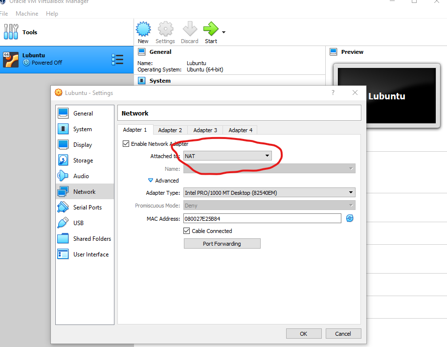
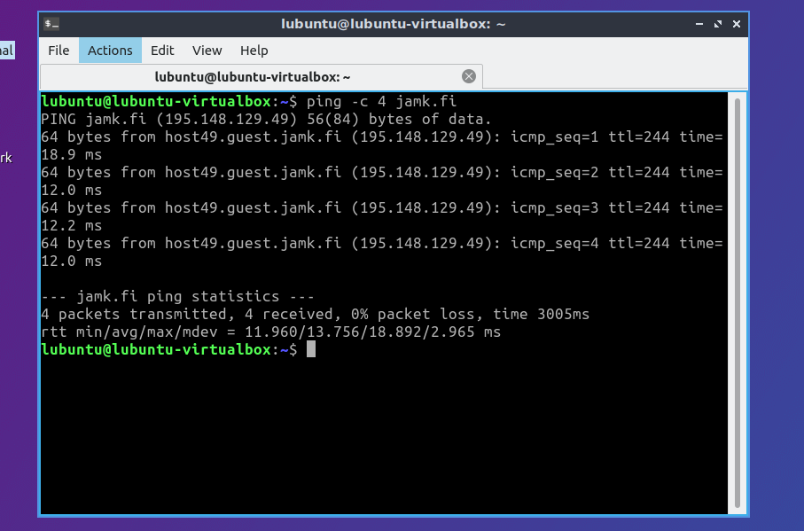
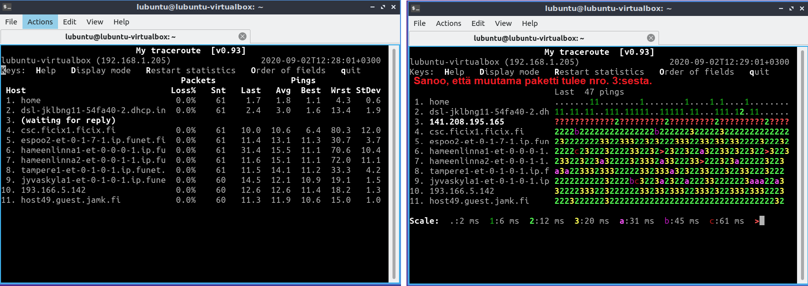
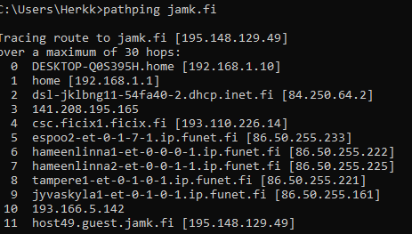

Ensimmäiset virtuaalikoneet
Minun nimeni on Herkko Mehtälä ja opiskelijanumeroni on AA2958
-
Mitä hyötyä virtuaalikoneista on?
- Virtuaalikoneet mahdollistavat monen käyttöjärjestelmän ajamisen virtualisointitekniikan avulla.
- Ajaa riskialttiita ohjelmia huolimatta siitä, että se voisi korruptoida tai vahingoittaa isäntäkonetta.
-
Mitä voit tehdä sillä?
- Voit ajaa monta käyttöjärjestelmää samasta koneesta jotka ovat eristäytyneet toisistaan. Tämä mahdollistaa esim: hiekkalaatikkoympäristön jossa on mahdollista testata ohjelmia, konfigurointia ja muuta ilman, että tämä haittaisi isäntäkonetta.
-
Onko tietokoneissa mitään pointtia ilman verkkoyhteyttä?
- Kyllä. Tällä voidaan esim.: Turvata järjestelmä internetistä tulevilta uhilta tai käsitellä tiedostoja tai tietokantoja jotka eivät missään nimessä voi vuotaa ulkopuolelle.
Virtuaalikoneen dokumentointi
[1]. Vaihdetaan virtuaalikoneen verkkoasetukset NAT (Network address translation) moodiin jotta saadaan toimiva internet yhteys.

[2]. Testataan virtuaalikoneen internet yhteys käyttämällä ping komentoa. Käyttämällä parametriä -c 4 lähetämme
vain 4 ECHO_REQUEST pakettia. (man ping kertoo kaikki parametrit)

lubuntu@lubuntu-virtualbox:~$ ping -c 4 jamk.fi
PING jamk.fi (195.148.129.49) 56(84) bytes of data.
64 bytes from host49.guest.jamk.fi (195.148.129.49): icmp_seq=1 ttl=244 time=18.9 ms
64 bytes from host49.guest.jamk.fi (195.148.129.49): icmp_seq=2 ttl=244 time=12.0 ms
64 bytes from host49.guest.jamk.fi (195.148.129.49): icmp_seq=3 ttl=244 time=12.2 ms
64 bytes from host49.guest.jamk.fi (195.148.129.49): icmp_seq=4 ttl=244 time=12.0 ms
--- jamk.fi ping statistics ---
4 packets transmitted, 4 received, 0% packet loss, time 3005ms
rtt min/avg/max/mdev = 11.960/13.756/18.892/2.965 ms
[3]. Testataan 'traceroute' komentoa. Tulokset olivat hajanaiset, joten vaihdoin verkkoasetukset 'bridged' moodiin.
lubuntu@lubuntu-virtualbox:~$ traceroute jamk.fi
traceroute to jamk.fi (195.148.129.49), 64 hops max
1 192.168.1.1 3,003ms 1,433ms 1,281ms
2 84.250.64.2 3,090ms 1,871ms 2,435ms
3 * 141.208.195.165 177,099ms 102,986ms
4 193.110.226.14 6,925ms 6,734ms 6,712ms
5 86.50.255.233 12,977ms 11,587ms 12,254ms
6 86.50.255.222 11,490ms 11,020ms 16,985ms
7 86.50.255.225 11,550ms 20,414ms 14,251ms
8 86.50.255.221 13,216ms 12,068ms 11,474ms
9 86.50.255.161 29,707ms 20,728ms 11,113ms
10 193.166.5.142 12,108ms 11,354ms 15,807ms
11 195.148.129.49 10,970ms 10,631ms 10,808ms
Suoritin komennon monta kertaa ja jonkin takia jokainen nro. 3 hop jäi viivyttelemään tai ei päässyt perille ollenkaan. En ole varma miksi näin on. Lisä testaus voisi auttaa paljastamaan tämän vian.
Kokeillaan tracerouten --resolve-hostnames parametria:
lubuntu@lubuntu-virtualbox:~$ traceroute --resolve-hostnames jamk.fi
traceroute to jamk.fi (195.148.129.49), 64 hops max
1 192.168.1.1 (home) 1,168ms 1,209ms 0,841ms
2 84.250.64.2 (dsl-jklbng11-54fa40-2.dhcp.inet.fi) 1,729ms 1,953ms 1,301ms
3 * * *
4 193.110.226.14 (csc.ficix1.ficix.fi) 7,139ms 6,923ms 6,835ms
5 86.50.255.233 (espoo2-et-0-1-7-1.ip.funet.fi) 11,546ms 11,578ms 11,471ms
6 86.50.255.222 (hameenlinna1-et-0-0-0-1.ip.funet.fi) 11,412ms 11,746ms 11,773ms
7 86.50.255.225 (hameenlinna2-et-0-0-1-1.ip.funet.fi) 11,652ms 11,893ms 11,488ms
8 86.50.255.221 (tampere1-et-0-1-0-1.ip.funet.fi) 12,504ms 14,214ms 12,910ms
9 86.50.255.161 (jyvaskyla1-et-0-1-0-1.ip.funet.fi) 12,428ms 16,620ms 12,405ms
10 193.166.5.142 (193.166.5.142) 11,684ms 16,449ms 11,709ms
11 195.148.129.49 (host49.guest.jamk.fi) 11,905ms 11,056ms 10,894ms
Kuten huomataan, nro. 3 hop ei saatu yhteyttä. Koitin vielä käyttää ping komentoa IP osoitteeseen 141.208.195.165
mutta en saanut mitään takaisin. Host alhaalla?
[4] Testataan vielä MyTraceRoute mtr komentoa. Tämä on kuin ping ja tracerouten yhdistelmä. Ohjelmassa on
monta display moodia jotka auttavat hahmottamaan dataa.

Windowsin oma mtr:än vastainen ohjelma on pathping.
